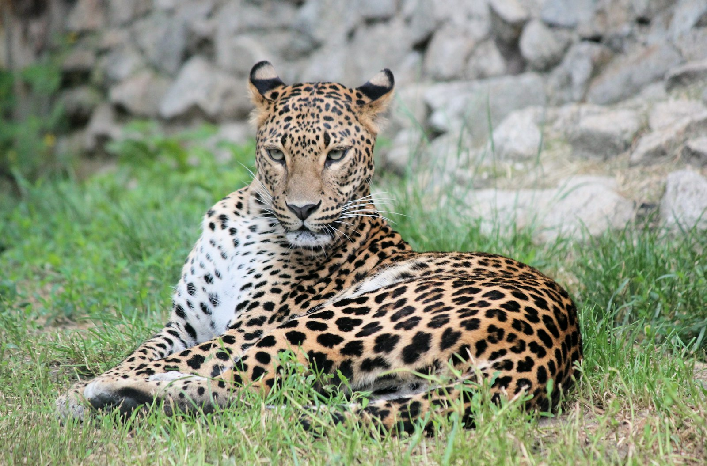
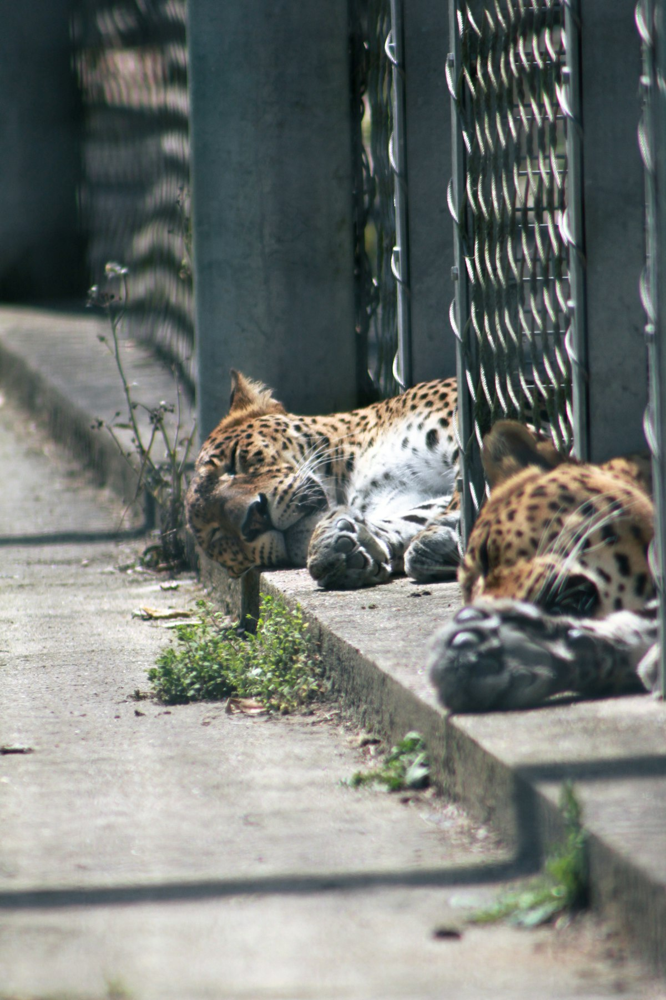

Amazon Field Guide · Wildlife No. 01
Jaguar: The Amazon’s Quiet Ambush Hunter
It looks like golden sunlight on the forest floor—until it moves. Meet the big cat that rules rivers, cracks turtle shells, and keeps the rainforest in balance.

If you could shrink yourself down and wander the Amazon at dusk, you might never see a jaguar at all. You would hear frogs. You would smell wet leaves. And somewhere nearby, a muscular cat the colour of sun-dappled soil would already know you were there.
The jaguar (Panthera onca) is the largest big cat in the Americas. Males often weigh around 80 kilograms—about as heavy as a Year 5 student plus a backpack full of books—and some tip over 100 kilograms. Females are usually lighter, around 56 kilograms. Stocky and barrel-chested, they are built less like a long-legged sprinter and more like a powerful swimmer who can also explode into a short chase.
A river hunter in a green maze
Jaguars once ranged from the southern United States all the way to Argentina. Today nearly nine out of every ten live in Amazonian forests and wetlands, especially in Brazil. They love water. They stalk riverbanks, then slip in after fish, turtles, or even a two-metre caiman—a reptile related to crocodiles.
Unlike most cats, jaguars are happy to get soaked. Their paws are slightly webbed, almost like soft flippers, which helps them push through current. Scientists call animals that hunt both on land and in water semi-aquatic. The jaguar is one of the few big cats that truly earns that label.
“Its bite is the strongest of any big cat for its size—strong enough to drive teeth through a turtle shell or a caiman’s skull.”
Why the forest needs its boss
Jaguars sit at the top of the food web. They are an apex predator: nothing in the Amazon regularly hunts them. By keeping large plant-eaters and seed-munching rodents in check, they stop any one species from chewing the forest bald. Places with healthy jaguar numbers often also hold more tapirs, monkeys, and understory birds. That “umbrella” effect means protecting one cat helps protect a whole neighbourhood of life.
Yet even this hunter is in trouble. The IUCN lists jaguars as Near Threatened. Roughly 170,000–180,000 remain worldwide, and they have already vanished from about half of the places they once lived. Their last great stronghold is the Amazon—and the Amazon itself is under pressure.
How a jaguar hunt works
- Hide in the pattern. Rosette spots break up the cat’s outline among roots and vines, so prey often never spots the danger until too late.
- Short, explosive pounce. Powerful leg muscles launch a sudden leap—not a long marathon chase like a cheetah’s.
- The skull bite. A bite force of about 1,500 newtons drives canine teeth through the skull or neck for a quick kill. That is why jaguars can take tough prey other cats avoid.
- Eat what the forest offers. More than 85 prey species are on the menu—from one-kilogram armadillos to 100-kilogram tapirs.
Five things that make a jaguar a survivor
- A stocky, barrel-chested body gives sprint power on land and thrust in water.
- A short, broad head packs huge jaw muscles for bone-crushing bites.
- Rosette camouflage hides the cat in mottled rainforest light.
- Semi-webbed paws help it swim after fish, turtles, and caiman.
- Flexible daily schedules—some hunt by day, others at night near people—help it dodge trouble.

Trouble ahead—and reasons to hope
Between 2000 and 2023, more than 27 million hectares of Brazilian jaguar habitat were turned into pasture or soy fields. Much of that clearing happened without proper permits. When forests shrink, jaguars and cattle meet at the edges. Hungry cats sometimes take livestock; angry ranchers may shoot or poison them. In some frontier areas, up to 150 jaguars and pumas are killed each year this way.
Illegal trade adds another danger. Teeth and bones can sell for high prices on the black market. Roads cut migration paths, smash animals in collisions, and leave small groups stranded. A solitary adult may need a territory spanning hundreds of square kilometres—so a highway through the wrong place is a disaster.
Hope is not gone. Scientists have mapped 51 Jaguar Conservation Units and about 2.6 million square kilometres of corridors that could keep breeding groups connected if deforestation slows. Indigenous territories already shelter about 63 percent of Amazonian jaguars and show some of the lowest threat levels. Rancher compensation schemes, anti-poaching patrols, and fire-break training are tools people are using right now. Protecting the jaguar means protecting the forest that cools our planet—and that is a job big enough for all of us.

Odd facts
Word bank
- Apex predator
- — an animal at the top of the food web; nothing regularly hunts it.
- Caiman
- — a crocodile-like reptile that lives in Amazon rivers and wetlands.
- Near Threatened
- — an IUCN category meaning a species could become endangered soon if threats continue.
- Semi-aquatic
- — living and hunting both on land and in water.
- Territory
- — the area an animal defends and uses for food and shelter.
- Keystone species
- — a species whose role holds an ecosystem together more than its numbers suggest.